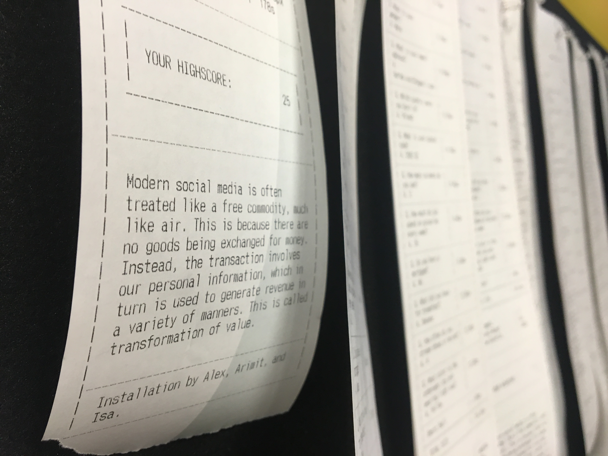

You just encrypted a file, restricting the right to view that file to yourself and anyone you choose to share the password with.
I thought we were friends.
Data which is private is data which only a certain number of people have the right to access.
...but where is the line drawn? How many people should have the right to access certain data before it isn’t considered private anymore? One? Two? Ten? Seven and a half billion? And when are these people comfortable sharing that data?
I did an experiment in which as I wandered from the Grand Canyon to Las Vegas in Google StreetView, I extracted some 360 images and used the horizons from those to create audio visualisations.
First, I extracted 360 images from Google StreetView.
Each image had its horizon in the same position, which helped me avoid the hassle of lining up the horizons.
I separated the sky from each image in order to distinguish the horizon.
I then converted the horizons into lines.
I could then approximate which line suited the audio spectrum the most on each frame.
I did so by calculating the total deviation between the horizon and the audio spectrum.
You can see it in action here:
Did I “steal” Google’s data? If I would’ve captured the images myself, would I have any more of a right to use them?
There is plenty of secondary detail in the images which can be considered personal, which does not make it into my visualisation. Does Google have the right to reveal people’s clothes, cars, and houses to the public?
And is the fact that the people in the images are (usually) not personally identifiable relevant in this discussion?
I initially phrased the first question to myself as if I had “stolen” the horizons themselves. However, it did not lead to a productive discussion as most people have a strong intuition that tells them that you cannot steal a horizon. But does this intuition extend to other things, such as buildings, cars, and clothes?
It seems that often depends on whether someone is personally identifiable in association with these things, i.e. whether the data is removed from its source. In reality, the source can be derived once enough identifying information is made public. There may be millions of people wearing blue t-shirts, but how many of them were in the Las Vegas strip, on the same sunny day as the Google car, travelling in a white Honda Civic with 2 others, wearing red shoes?
As evident, the greater the amount of “public” data surrounding a person is collected, the greater the chance that their privacy will be breached.
That brings us to an interesting conclusion—privacy of data is influenced by the privacy of the data surrounding it. Given enough “public” data, a profile of the source can be derived despite never having direct access to it. This fact is used by large ad companies such as Google and Facebook in order to track its users and serve personalised ads to them.
Data privacy is closely linked to data collection. As is often witnessed in the news, certain kinds of data collection are often labelled as a breach of privacy by media organisations.
...so what kind of data can be collected?
I, along with Alex Villacis and Isa Defesche, created an installation which aimed to test this boundary.
We created a game which was made easier the more information the player gave up. The information was personal in nature, ranging from simple things like their name and gender, to more personal information such as what they had for breakfast and the colour of their underwear. It’s interesting to note that while the latter is labelled as “more personal” (and made the game easier than the first two), it is actually less identifying in a vacuum as compared to the first two.

We also incorporated a leaderboard into the installation in order to incite a sense of competitiveness from the player.
Here is a video showing the installation in action:
At the end of each round, we handed the player a receipt listing all the data they sacrificed for their highscore. We also pinned a copy of the receipt to a board. This is interesting, as each player was aware that their data would be visible to everyone and gave it up with that in mind.
We observed that most players, after trying the game at its hardest difficulty without answering any questions, eventually chose to provide most of their data. It was striking how few people lied or entered random information, despite not having any repercussions for doing so.
What does this tell us about people’s sentiment on data collection?
It appears that the context of the data collection plays a huge role in how comfortable people are with their data being collected. If instead of a physical installation the same questions were asked by a large social media company on a digital platform, it is possible that people would have been more hesitant in providing this information. The role the physical presence of the designers played in this situation cannot be undermined either, as it might have incited the trust that led people to submit their data.